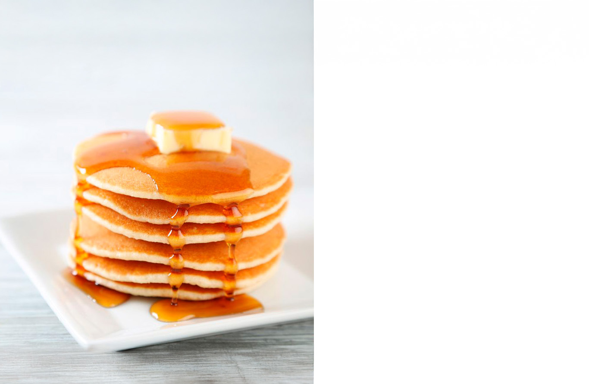

Panqueques

Descripción:
Delicioso postre y rápido de preparar. Mucho mejor si está acompañado de miel, mermelada o dulce de leche.
Ingredientes:
- 1 taza de harina
- 1 huevo
- 1 chorro pequeño de aceite de oliva
- 180ml de leche
- 1 cdta. de mantequilla
- 1 chorro de miel
- Reune los ingredientes
- Colocar en un bowl el huevo, la leche y la harina. Mezclar bien hasta que se integren
- Agregar un chorrito de aceite y mezclar
- Calentar la sartén con un poco de mantequilla
- Añadir una cucharada de la mezcla y dar la vuelta cuando burbujee la superficie
- Servir con mantequilla y miel (o cualquier relleno de su preferencia)